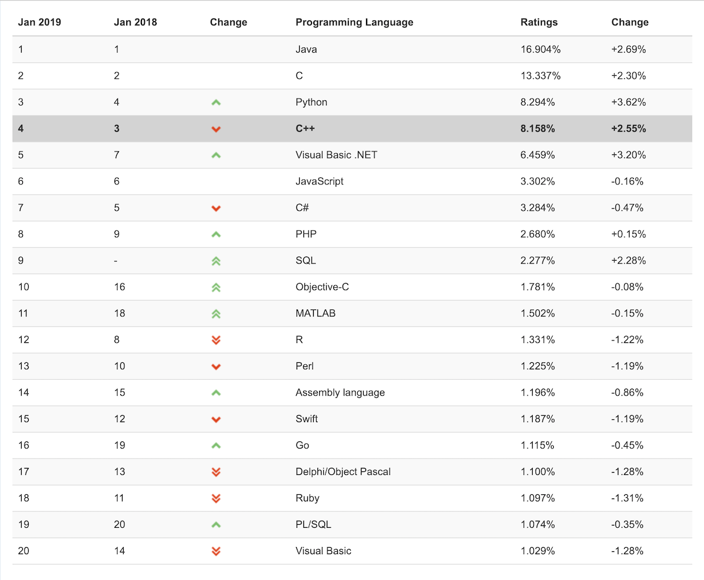

class: center, middle # INFO 450 Spring 2019 --- # Agenda 1. Introduction 2. Deep-dive 3. ... --- # Introduction --- # <div style="text-align:center;font-size: 2em;line-height:1.8em;"> <strong>Programming</strong> <br/> is the process of creating a set of instructions that tell a computer how to perform a task. Programming can be done using a variety of computer languages </div> --- # Why learn to program? All the reasons! + Programming help develop problem solving skills + Programming teaches you how to think in both structured and create way + Programming makes things easier + Programming teaches you persistence + Check out developer salary ranges + It’s cool... --- --- # Innovations in technology have shaped our everyday lives <img style="width: 100%;" src="companies.png"/> --- # Why are we learning C++? <div style="text-align:center;font-size: 2em;line-height:1.8em;"> <strong>Python</strong> is obviously the best language in the universe. C++ is a much lower level language, closer to how the machine works. </div> --- # Still popular!  --- # Anatomy of a C++ Program .left-column-half[ ```c++ // HelloWorld.cpp : /* Defines the entry point for the console application. */ #include <iostream> using namespace std; int main() { cout << “Hello World” << endl; return 0; } ``` ] .right-column-half[ <-- This is my file name! <-- This is a comment! <br/> <br/> <br/> <br/> <br/> <br/> <-- Preprocessor, include <-- Namespace <-- main is where we start! <-- Code block! <-- cout is a way of talking to the world <-- The result of your program/function <-- End of code block. ] --- # Comments <strong>Comments</strong> are statements that do not affect the compiling or running of a program Comments are simply explanatory remarks that the programmer includes in a program to clarify what is taking place These remarks are useful to later program users because they might help explain the intent of a particular statement or the purpose of the entire program C++ supports both line and block comments ```c++ // A line comment /* a block comment */ ``` --- # Preprocessors and Namespace A preprocessor is a tool that runs before the actual compilation starts. Preprocessor directives are commands for the preprocessor and always start with a pound sign \# <strong>\#include <iostream></strong> is a preprocessor directive that tells the preprocessor to include the iostream standard header file Header files are files that contain predefined values and routines The ` < >` tells the compiler to look in predefined header directories only (generally where the STL is kept). `""` tells to compiler to look in the local directory, and usually the predefined header directories as A namespace preprocessor directive tells the compiler that the subsequent code is making use of names in the specified namespace. In this case, `namespace std` refers to the C standard library --- # Main Every C++ program contains at least one function, and that function is called `main()` The body of every function in a C++ program is a sequence of statements contained in curly braces, also known as curly brackets ```c++ { } ``` All complete C++ statements end with a semicolon It is a standardized convention that function `main()` is declared with an int preceding it. `int` is the return value type of the function `main()`. The programmer can use the return value of `main()` to convey a success or error state to the parent application. Conventionally a `0` is returned for success and non-zero failure --- # cout The cout in the statement the writes "Hello World" to the console screen is a stream defined in the standard (std) namespace The insertion operator () is used to put the text "Hello World" into the stream. The endl is used to end the line (like a carriage return and/or new line) The compiler was able to compile Line that contains cout because we instructed the preprocessor to include the definition of std::cout in with ```c++ #include <iostream.h> ``` and identified the appropriate namespace ```c++ namespace std; ``` --- --- # Why namespaces? With namespace declaration: ```c++ namespace std; int main() { cout << "Hi mom!" << endl; } ``` Without namespace declaration: ```c++ int main() { std::cout << "Hi mom!" << endl; } ``` --- # Building your program 1. Preprocessor * Takes the source code and evaluates the preprocessor directives (e.g. #includes, #defines, etc) * Generates a preprocessed source files 2. Compiling * Takes the preprocessed source code and compiles to object code * Check for syntax and semantic rules (e.g. type checking) 3. Linking * Takes the object files and links them into an executable program --- --- --- --- ---